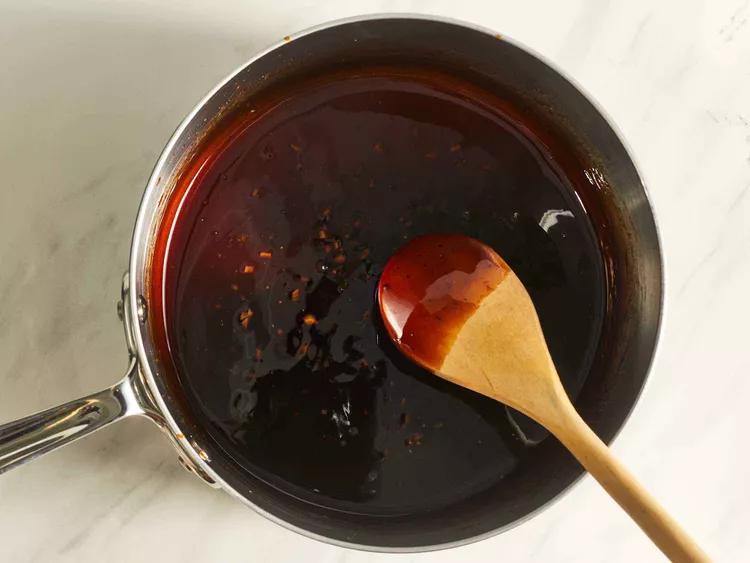
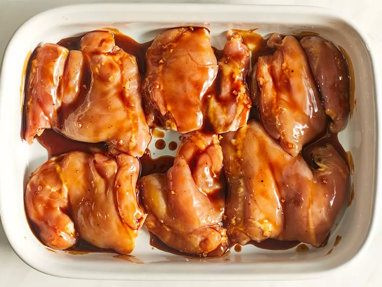
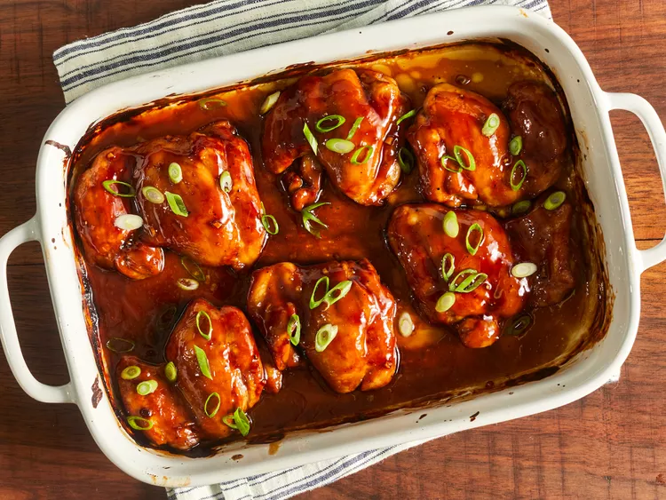

Home
Baked Teriyaki Chicken
Description
What Is Teriyaki Chicken?
Teriyaki chicken is simply chicken that is coated in teriyaki sauce. The dish comes from the Japanese cooking technique called teriyaki, where meat is grilled or broiled with a soy sauce, mirin, and sugar glaze. Today, teriyaki chicken refers to any chicken with teriyaki sauce — regardless of the cooking method.
What Is Teriyaki Sauce?
Traditional teriyaki sauce is made up of four ingredients: soy sauce, mirin, ginger, and sugar. But many chefs have their own takes on teriyaki sauce. In this recipe, the teriyaki sauce includes soy sauce, sugar, ginger, cornstarch (for thickening), apple cider vinegar (instead of mirin), water, garlic, and black pepper.
How Long to Bake Teriyaki Chicken
The baking time can vary depending on how big your chicken pieces are. In this recipe, the chicken is cooked for 50-60 minutes. This should work for most chicken thighs. When in doubt, pull out your instant-read digital thermometer. Teriyaki chicken is done when the chicken reaches an internal temperature of 165 degrees F (74 degrees C).
Ingredients
- 1/2 cup white sugar
- 1/2 cup soy sauce
- 1/4 cup apple cider vinegar
- 1 tablespoon cornstarch
- 1 tablespoon cold water
- 1 clove garlic, minced
- 1/2 teaspoon ground ginger
- 1/4 teaspoon ground black pepper
- 12 boneless, skinless chicken thighs
Steps
- Preheat the oven to 425 degrees F (220 degrees C). Lightly grease a 9x13-inch baking dish.
- Combine sugar, soy sauce, vinegar, cornstarch, cold water, garlic, ginger, and black pepper in a small saucepan over low heat; simmer, stirring frequently, until teriyaki sauce thickens and bubbles, 3 to 5 minutes. Remove from the heat.

- Place chicken thighs in the prepared baking dish; brush both sides of each thigh with teriyaki sauce. Reserve any extra sauce for basting.

- Bake in the preheated oven for 30 minutes.
- Flip chicken; brush with sauce. Continue baking, basting with remaining sauce every 10 minutes, until no longer pink and juices run clear, 20 to 30 minutes more.
- Serve hot and enjoy!
